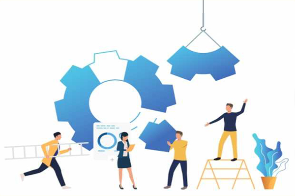

Una cooperativa es una organización que agrupa a varias personas con la finalidad de realizar una actividad empresarial. Su funcionamiento se basa, fundamentalmente, en la cooperación de todos sus socios, de ahí el nombre “cooperativa”. Para cumplir con sus objetivos, debe organizarse internamente con el fin de que cada uno de los asociados posean funciones y roles que cumplir. La cooperativa se organiza mediante la conformación de tres “órganos” que la regulan en su totalidad: Asamblea, Consejo de Administración y Sindicatura.
La Cooperativa presenta una serie de ventajas respecto otras formas societarias que son las siguientes
Capital social Variable
El capital social se estipula en los Estatutos, por lo que se puede adaptar a las posibilidades de los socios que deciden emprender la cooperativa.
Alta Comunicación entre los socios
Entre los socios: al estar todas las personas muy involucradas en el funcionamiento, entre ellas hay mucha comunicación y la transmisión de información acostumbra a ser rápida y eficaz.
Toma de decisiones democrática
Todos votan, todos deciden, la voz de cada uno de los integrantes es escuchada y tomada en cuenta a la hora de la toma de decisiones.
Responsabilidad
En las Cooperativas la responsabilidad es uno de los factores mas esenciales, todos saben el rol que ocupan y cuales son sus ventajas y limitaciones.

Compañerismo
En las Cooperativas, todos trabajan en pos de ayudar a sus compañeros, ya que el logro de uno es el logro de todos, por ello y porque no existen categorías, el compañerismo es una gran ventaja en este sistema laboral.

Igualdad
En una Cooperativa, todos trabajan en igualdad de condiciones, no existe la jerarquía ni el poder.

{kind=link}
{kind=link}
{kind=link}
{kind=link}
{kind=link}